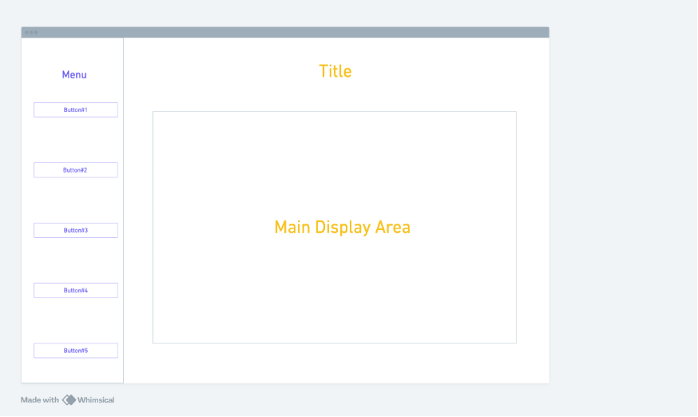
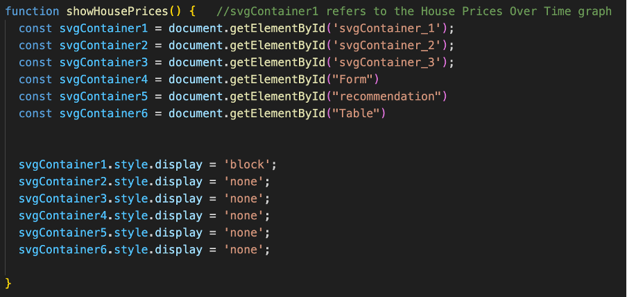
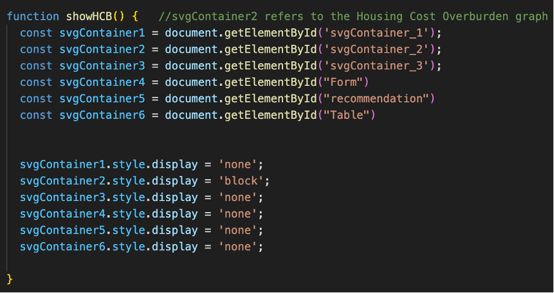
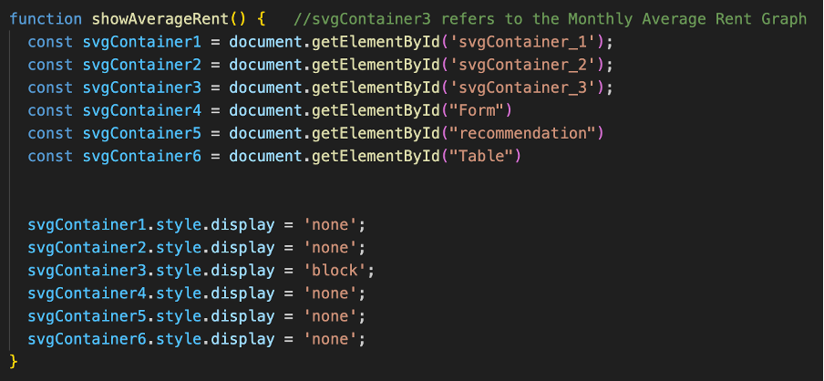
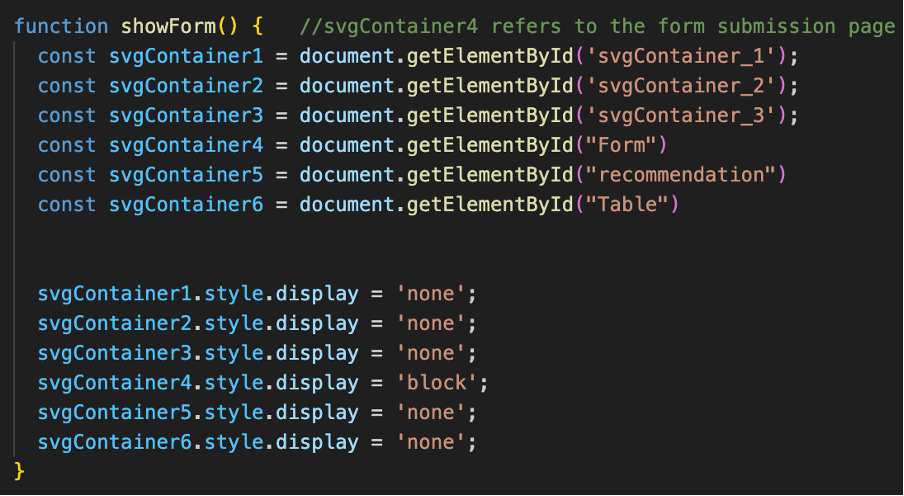
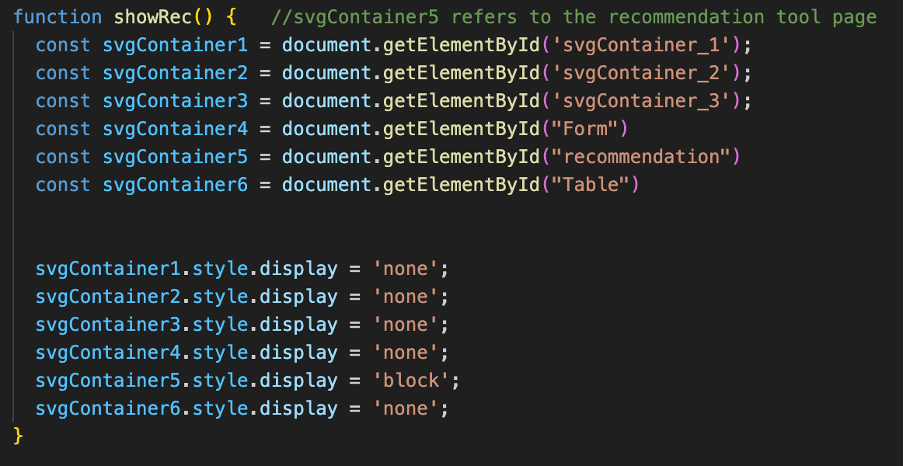
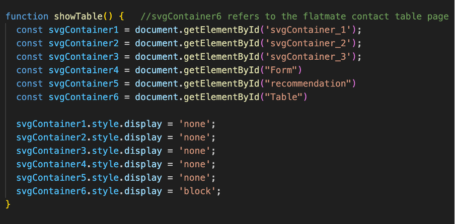
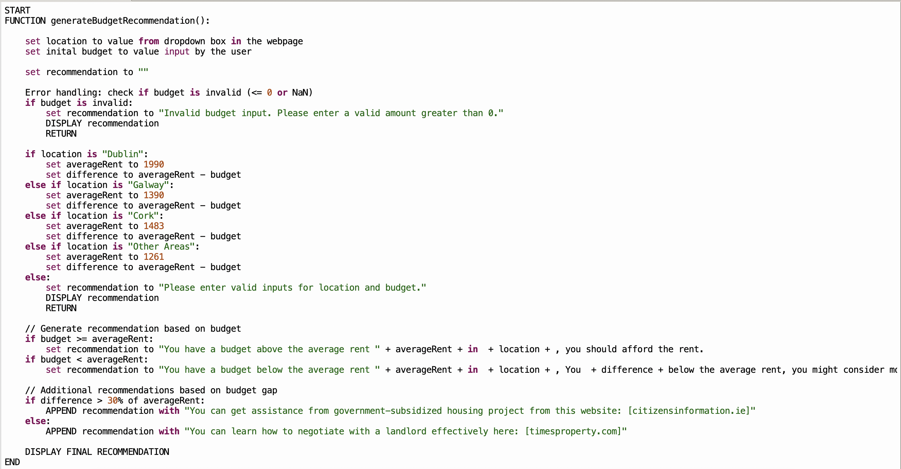

Meeting The Brief
Investigation
Thematic Brief Research and Context
The topic I chose to investigate is housing in Ireland, which I believe is one of the most concerning social problems in Irish society. Much like the general election debates on RTE a few months ago, where different political parties discussed how to address the ongoing housing issues, these were the highlights and captured the most public attention.
According to the Parliamentary Budget Office (PBO) report on Housing Affordability for Private Household Buyers in Ireland [1] [2], between 2011-2022, the population grew by 560,887, while the housing stock increased by only 117,276 units.
Sources: Social Justice Ireland | Parliamentary Budget Office Report
My Interactive System: Housing Data Hub
The “Housing Data Hub” I created is an accessible interactive information system providing insights into the current housing problem. This system aims to raise awareness and assist various end-users and stakeholders, such as individuals seeking housing solutions or NGOs needing intuitive information.
Alternative Approaches Considered
However, before I take this approach for my interactive information system, I have considered two alternative options. The first was an interactive map of Ireland, counties with higher housing prices are shown in a darker colour with detailed information on hover, This idea was rejected because the coding skill required is exceeding my level, so I chose to use Pygal graph instead. The second approach I considered was to create a rental listing website where users could browse and compare rental prices in different locations. It was rejected because similar platforms, like Daft.ie, already exist, and this approach wouldn’t address the deeper affordability and housing shortage issues.
Data Collection and Analysis
After I understood the reality of the problem, I started to find available data sets and any existing interactive information systems that could inspire my project. For example, I found a website made by the Irish government using the advance search function on Google. [3] Extensive data can be downloaded and ready-made graphs are available on this website. It became the starting point of creating my interactive system. I downloaded the “ House price overburden” data, which measures the percentage of the population that the total cost of housing exceeds 40% of their disposable income. The data is in CSV form so I can process and visualize it further using Python.
Sources: housingagency.ie |

Findings and Insights
I found many interesting insights during my further research into the topic. I noticed the HCO rate for households without mortgages in the year 2020 is significantly higher than in other years compare to household with mortgages. Logically, households without loans should be spending a smaller percentage of their disposable income on housing compared to those with loan obligations. Upon further research, I found that the COVID-19 pandemic was the key driver behind this phenomenon. [4] [5]
Sources: Trading Economics | NESC Report

Plan and Design
My project follows the Leaving Cert Computer Science Software Development Cycle, incorporating both waterfall and algae approaches. It uses a waterfall approach because the requirements and marking scheme remain the same throughout the project development cycle, and it’s also adopted an agile approach as I frequently reiterate back to previous stages to change my investigation ideas or fix any coding bugs I made during the create stage. [9] [10]

Artefact System Flowchart

Python Sorting Flowchart
Python Visualization Flowchart

Basic Requirements
- Collect and Prepare Data
- I will download the data needed for my project from different publicly available datasets, such as Central Statistics Office.
- There will be elements I don’t want or distorted information in the raw data downloaded, so I will clean the data into suitable formats using Python on Thonny IDE. Additionally, I will merge and separate 7 years of data into a single CSV file for further processing. [19]
- Data analytics and Visualization
- I will download the Pygal module to the Local Python3, for different data sets visualization. Three SVG graphs will be generated (Bar, Line, Pie)
- Each graph will be clearly labeled with titles, axis labels, and legends. Example title: House price over time by area
- Both lists and dictionaries will be used as data structures during data analysis.
- Basic Interactive Information System Interface
- The web-based interface called “Housing Data Hub” will consist of three different interactive SVG graphs, a housing recommendation tool, and a form that will allows users to enter their personal information and budget to find flatmates. [13] [14]
- Three Pygal Graphs will provide visualization to users, and graphs will be easily switched by clicking buttons on the side menu. [16]
Advance Requirements
- Pygal graphs are fully interactive, allowing users to hover for details and filtering specific data.
- A form will be created to allow users to enter their personal information and budget to find flatmates.
- The data collected will consist of three data types: Name (str), Budget (float), Birthday (date).
- The user information will be stored in Google Firebase. [20]
- Submitted data will be displayed on a separate page in table form. In this way, users will be able to contact flatmates who suit their location and budget.
- A rent affordability tool will be on a separate web page. It compares the user budget to the average monthly rent in the location and returns a simple yes or no answer.
Create
Development Progress Log
Week 1 (December 2024)
- The First Day, introduction to the project brief, idea generation, and brainstorming
- After an initial search, I chose Housing as my investigation topic.
- By using Google Advance Search, I found a publicly available dataset called “The Housing Agency”, it became the starting point for my research.
Week 2 (January 2025)
- Christmas Break, no work took place.
Week 3 (January 2025)
- Investigation 1st draft, didn’t include a discussion of two alternative project ideas that were considered but rejected and an Identification of potential stakeholders and end-users.
- Investigation 2nd draft, missing parts were added however exceeded. However, I failed to adhere to 400 words requirement.
- Investigation 3rd draft, words count under the limit and all essential parts included after adjustment.
Week 4 (January 2025)
- Plan and Design 1st draft
- I create the wireframe for my system with the tool “Whimsical”
- I create the flowchart for my system with the tool “drawit.io”
Week 5 (January 2025)
- Plan and Design 2nd draft, fixed some typos and added wireframe and flowchart to the document.
- Plan and Design 3rd draft, add flowcharts for python data extracting sorting visualization.
Week 6 (February 2025)
- Create stage started, coding ………
- Data downloaded from different public datasets.
- Cleaned CSV files made, all information cleaned and sorted using Python.
- Frame of the website made, adjust background color and CSS.
Week 7 (February 2025)
- I was filling information into my interactive information system, adding SVG graphs, a Recommendation tool, and test the Firebase functionality. However, the installation of the Pygal module failed, so the graphs weren’t interactable at the beginning with several other problems encountered. I had been overly optimistic about my coding skills, so I decided to iterate back to the previous section of the create stage to make the code more concise.
- Start testing process, functional and unit testing.
- Unit test complete, test table created.
- Functional test complete, test table created. Final refine and optimize the overall visual layout of the webpage.
Week 8 (February 2025)
- Mid -Term Break, no work took place
Week 9 (February 2025)
- Create 2nd draft, adjust contents to suit the marking scheme requirements. Evaluate in general rather than break into different parts.
- Write pseudocode for algorithms
- Evaluation 1st Draft completed, exceeded 300 words limit.
- Review Evaluation 2nd Draft. Adding more comments on the source documentation for any modules or coding methods I used.
- add links and code comments regarding how to embed the SVG files.
- Create 3rd draft. The initial algorithm I chose wasn’t analytical, which is not what the marking scheme asked for. So I had to redo this section. I decided to use the decision algorithm from the rental budget recommendation tool on my website as the new algorithm to discuss.
- Evaluation 3rd draft. Redo the whole thing because I was evaluating myself and how I fulfilled the requirements ,instead of evaluating the artefact and how it meets the requirements, identifying the successes and areas for future improvement.
Week 10 (March 2025)
- Started to convert reports from Word documents to HTML webpage.
- Reorganize project folder in line with page 11 in the brief.
- Added comments about link to any modules/packages that I used with documentation that explains what am I doing.
- Add an error handling process to the recommendation tool of my interactive information system, that preventing users from entering 0 as their monthly rental budget.
- Enhance the recommendation tool so it can tell the user how far their budget is away from the average, rather than the previous version only provide a yes or no answer leave the user unclear about their affordability.
- Added Expected outcomes and Test ID Numbers to the test tables.
- IEEE Style Reference
Week 11 (March 2025)
- Make Word Count Table
- Record meeting the brief Video
- Final check and wrap up the project
Week 12 (March 2025)
- Project submitted to the state examination commission before the deadline.
Problems Encountered
1. Pygal is the visualization tool for my project, and it’s an external tool package that is not embedded in the Thonny IDE. Initially, I attempted to download it within the IDE, but I found it missing from the package library. To resolve this, I search online using resources like YouTube and Google [15] [19], and found that I need to input the pip install Pygal command into the CMD console on my device, not directly into the Thonny shell. This solution solved my issue and made my graphs interactable.
Sources: Pygal Module Installation Tutorial |

2. When visualizing Housing Cost Overburden data into a bar chart, my initial idea was to use For Loops and Panda to extract Housing Cost Overburden data for six years from a large CSV file and visualize it to a single graph. However, the coding skills required were beyond my current abilities and understanding. Instead, I applied one of the computational thinking techniques --- Decomposition, which involves breaking problems down into smaller components so they can be tackled easier. In my project, the code became much more concise and easier to understand by dividing the large graph into six smaller graphs, each representing the data for a specific year. I was able to locate the relevant data for each year by using the row position and index in the CSV file, as the data was organized to repeat every four rows.

(Before) For example, HCB data for 2019 is stored together within a large csv file containing data from 2017 to 2022, it was difficult to visualize them together in a bar chart.

(After) HCB data for 2019 is isolated for further visualization to a bar chart containing data only for that year.
Program Testing
Unit Testing
Objective: helps to eliminate the risk of having bugs in code by break the software code to each unit, validate each unit and check whether they are performing as expected.
Webpage Display Test
- showHousePrices() Function

Verify that svgContainer_1 is displayed while others are hidden.
- showHCB() Function

Verify that svgContainer_2 is displayed while others are hidden.
- showAverageRent() Function

Verify that svgContainer_3 is displayed while others are hidden.
- showForm()Function

Verify that svgContainer_4 is displayed while others are hidden.
- showRec() Function

Verify that svgContainer_5 is displayed while others are hidden.
- showTable() Function

Verify that svgContainer_6 is displayed while others are hidden.
Test Table

Functional Testing
Objective: validates the software system against functional requirements, test each of the individual functions or features of a completed system.
I invited my friends as tester during the level of functional testing.
Form Submission Test
Input Validation
- Test E-mail format validation (example@domain.com)
- Test that Budget only accepts numeric values.
- Test that Date of Birth only accepts Char values.

The validation process is completed by hardcoding the input box, so that only certain values can be accepted.
Test Table

Data Submission Test
- An alert box displays a confirmation message if the data is correctly pushed to the Firebase.
- If the alert box doesn't pop out during the uploading process, the user will be aware of the error.


Test Table

Algorithm
Budget Recommendation Tool
When the users use the budget recommendation tool on the housing data hub, they will be prompted to enter their desired rental location and budget. These two arguments are processed by the JavaScript algorithm outlined below.
Firstly, the algorithm determines the selected location. For example, the letter “D” refers to the Dublin Area. Next, the algorithm executes the relevant code section based on the user’s location. The user’s budget is compared to the average monthly rent from my analytic data for that specific area. If the user’s budget is lower than the average rent, they will receive a message suggesting them to consider cheaper areas and how far their budget is away from the average to provide a better clarity about their affordability. Conversely, If the user’s budget is higher than the average rent, a message will inform that they should be able to afford the rent.
Supplementary recommendation:
If the user's budget is close to or able to afford the rent in the area (budget difference <= 30% of the average rent ), prompt them to learn negotiation skills with landlords.
If the user's budget has a large gap compared to the average rent in the area (budget difference > 30% of the average rent ), prompt them to get assistance from government subsidy projects or low-rent housing policies.
Additionally, the algorithm includes an error-handling process that triggers an error message in the event of invalid inputs and prevents users from entering their budget as €0.


Pseudocode

Evaluation
Basic Requirements
- Collect and Prepare Data
The artefact meets these requirements because it successfully integrates three datasets: House Prices Overtime by area from the Central Statistics Office, Housing Cost Overburden spending as percentage of disposable income from The Housing Agency, and Average Rent of the Dublin area from DATA.GOV.IE. [18]
In addition, Unnecessary symbols and irrelevant data were cleaned to ensure accuracy, with clear evidence provided.
- Data analytics and Visualization
Three fully interactable SVG graphs (Line, Bar, Pie) with each representing different key aspects were generated and embedded on the artefact using the Pygal module in Python, each graph has been clearly labeled with titles, axis labels, and legends. In terms of analytics, both lists and dictionaries has been used as data structures.
- Basic Interactive Information System Interface
The artefact is a web - based interactive system provide the public information about my chosen topic --- Housing Problem in Ireland.
The system allows users to switch between different graphs via sidebar buttons.
Advance Requirements
The artefact satisfied each advanced requirements because…
- Embedded graphs are fully interactive, allowing users to hover for details and filter specific data.
- There is both a rental budget recommendation tool and a form to collect user data for flatmate matching. Multiple types of user inputs are stored in the Google Firebase and display user inputs in a structured table.
Areas For Improvement
The flatmates matching form may raise privacy ethical concerns because anyone can view the personal information submitted by others, which could lead to its illegal use. This issue could be addressed by adding a prompt that asks users to enter a pseudonym instead of their real name.
Furthermore, this artefact still has substantial room for improvement by adding more features. For example, AI tools could be integrated into the Housing Data Hub, where machine learning will enable the system to analyse historical data, inflation rates, and market demand. Users could input their desired rental location with a timeframe to see the expected price in the future, thus helping them make better decisions.
Reference
[1] “Addressing Ireland’s housing crisis: Urgent policy reforms needed | Social Justice Ireland,” Social Justice Ireland, May 29, 2024. //www.socialjustice.ie/article/addressing-irelands-housing-crisis-urgent-policy-reforms-needed
[2] “Housing affordability for private household buyers in Ireland,” Parliamentary Budget Office, 2023. [Online]. Available: data.oireachtas.ie/ie/oireachtas/parliamentaryBudgetOffice/2023/2023-10-05_housing-affordability-for-private-household-buyers-in-ireland_en.pdf
[3] Eurostat/EU-SILC, “Housing Cost Overburden,” The Housing Agency. https://www.housingagency.ie/data-hub/housing-cost-overburden
[4] Trading Economics Report https://tradingeconomics.com/ireland/housing-cost-overburden-rate-owner-no-outsting-mortgage-or-housing-loan-eurostat-data.html
[5] N. Cahill, “The implications of COVID-19 for housing in Ireland,” National Economic And Social Council, Jun. 2020. [Online]. Available: http://files.nesc.ie/nesc_background_papers/c19-housing.pdf
[6] Central Statistics Office, Department of Housing, Local Government and Heritage, and Statistics & Data Analytics Unit, “HSA06 Average price of houses.(accessed Dec. 23, 2024). "https://data.cso.ie/table/HSA06"
[7] Central Statistics Office, “RIA02 - RTB Average Monthly Rent Report.” "https://data.gov.ie/dataset/ria02-rtb-average-monthly-rent-report"
[8] “Canva Colour Wheel.” "https://www.canva.com/colors/color-wheel/"
[9] "Flowchart Drawing Tool" "https://www.drawio.com/"
[10] “Wireframe Creating Tool ” "https://whimsical.com/"
[11] “W3Schools.com. Fonts” "https://www.w3schools.com/cssref/css_websafe_fonts.php"
[12] “W3Schools.com. Conditional Logic Tutorial” "https://www.w3schools.com/js/js_if_else.asp"
[13] “W3Schools.com. HTML” "https://www.w3schools.com/html/"
[14] “Embedding in a web page — pygal 2.0.0 documentation.” "https://www.pygal.org/en/stable/documentation/web.html"
[15] “Installing — pygal 2.0.0 documentation.” "https://www.pygal.org/en/stable/installing.html
[16] “Styles — pygal 2.0.0 documentation.” "https://www.pygal.org/en/3.0.0/documentation/styles.html"
[17] “ADLAM Display - Google Fonts,” "https://fonts.google.com/specimen/ADLaM+Display"
[18] “GeeksforGeeks, “with statement in Python,” GeeksforGeeks, Mar. 03, 2025” "https://www.geeksforgeeks.org/with-statement-in-python/"
[19] “YouTube. Pygal Module Installation ” "https://youtube.com/shorts/mdxizwKE-Z8?si=rxifoQJkZDGDX8tW"
[20] “Firebase - Environment Setup.” https://www.tutorialspoint.com/firebase/firebase_environment_setup.htm
[21] “IEEE citation style guildelines and examples,” Scribbi. "https://www.scribbr.com/ieee/ieee-in-text-citation/"
[22] “IEEE Citation Generator” Scribbi. "http://scribbr.com/citation/generator/"
Word Count Table